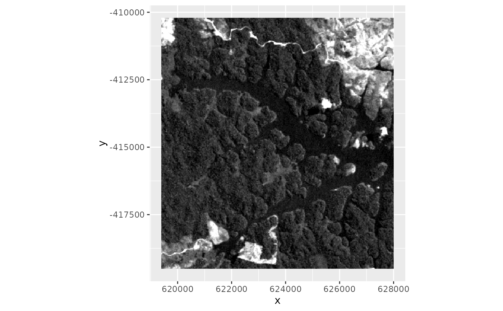
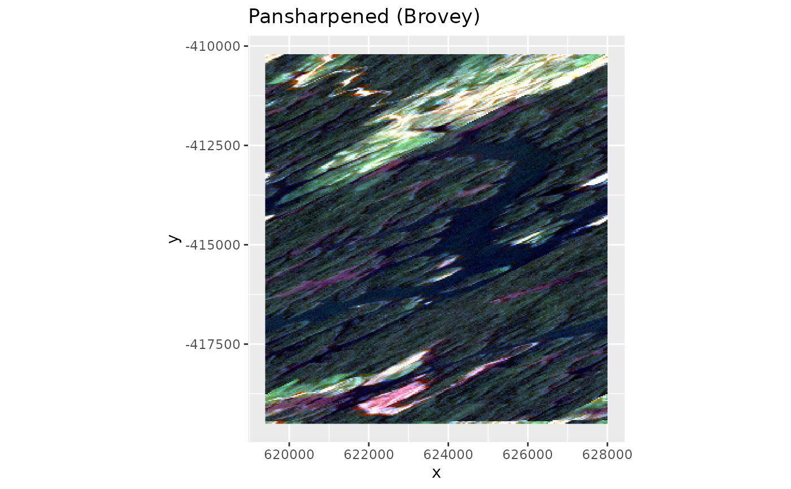
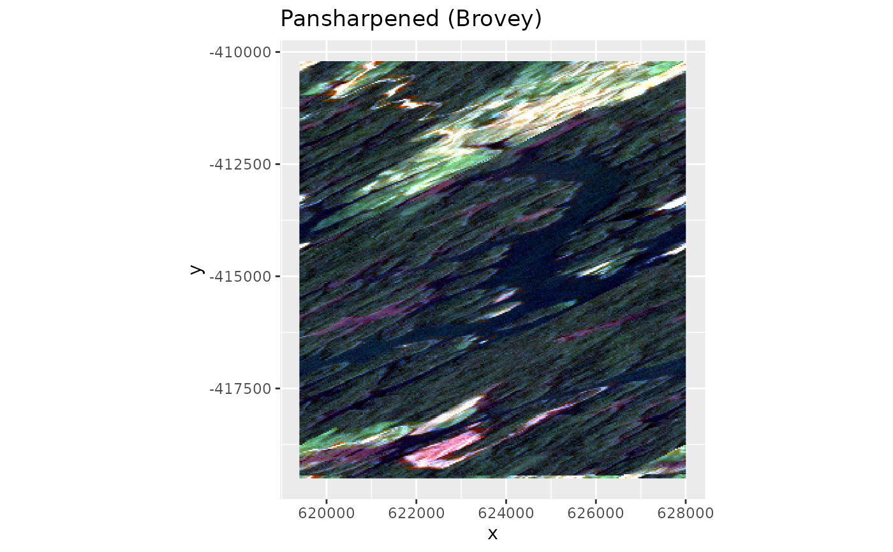

provides different methods for pan sharpening a coarse resolution (typically multispectral) image with a higher reolution panchromatic image. Values of the pan-chromatic and multispectral images must be of the same scale, (e.g. from 0:1, or all DNs from 0:255)
Arguments
- img
SpatRaster. Coarse resolution multispectral image
- pan
SpatRaster. High resolution image, typically panchromatic.
- r
Character or Integer. Red band in
img. Only relevant ifmethod!='pca'- g
Character or Integer. Green band in
img. Only relevant ifmethod!='pca'- b
Character or Integer. Blue band in
img. Only relevant ifmethod!='pca'- pc
Integer. Only relevant if
method = 'pca'. Which principal component to replace. Usually this should be the first component (default). Only if the first component is dominated by something else than brightness it might be worth a try to use the second component.- method
Character. Choose method from c("pca", "ihs", "brovey").
- norm
Logical. Rescale pan image to match the 1st PC component. Only relevant if
method = 'pca'. IfTRUEonly min and max are matched to the 1st PC. IfFALSEpan will be histogram matched to the 1st PC.
Details
Pan sharpening options:
method='pca': Performs a pca using rasterPCA. The first component is then swapped for the pan band an the PCA is rotated backwards.method='ihs': Performs a color space transform to Intensity-Hue-Saturation space, swaps intensity for the histogram matched pan and does the backwards transformation.method='brovey': Performs Brovey reweighting. Pan and img must be at the same value scale (e.g. 0:1, or 0:255) otherwise you'll end up with psychodelic colors.
Examples
library(terra)
library(ggplot2)
## Fake panchromatic image (30m resolution covering
## the visible range (integral from blue to red))
pan <- sum(lsat[[1:3]])
ggR(pan, stretch = "lin")

## Fake coarse resolution image (150m spatial resolution)
lowResImg <- aggregate(lsat, 5)
## Brovey pan sharpening
lowResImg_pan <- panSharpen(lowResImg, pan, r = 3, g = 2, b = 1, method = "brovey")
lowResImg_pan
#> class : SpatRaster
#> dimensions : 310, 287, 3 (nrow, ncol, nlyr)
#> resolution : 30, 30 (x, y)
#> extent : 619395, 628005, -419505, -410205 (xmin, xmax, ymin, ymax)
#> coord. ref. : +proj=utm +zone=22 +ellps=WGS84 +towgs84=0,0,0,0,0,0,0 +units=m +no_defs
#> source(s) : memory
#> names : B1_dn_pan, B2_dn_pan, B3_dn_pan
#> min values : 47.20757, 18.43627, 11.80072
#> max values : 191.12757, 87.47762, 85.39481
## Plot
ggRGB(lowResImg, stretch = "lin") + ggtitle("Original")
#> Warning: data length [3534] is not a sub-multiple or multiple of the number of columns [58]
 ggRGB(lowResImg_pan, stretch="lin") + ggtitle("Pansharpened (Brovey)")
#> Warning: data length [88350] is not a sub-multiple or multiple of the number of columns [287]

ggRGB(lowResImg_pan, stretch="lin") + ggtitle("Pansharpened (Brovey)")
#> Warning: data length [88350] is not a sub-multiple or multiple of the number of columns [287]
